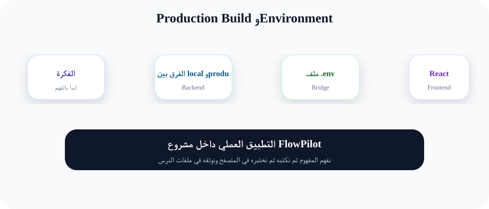
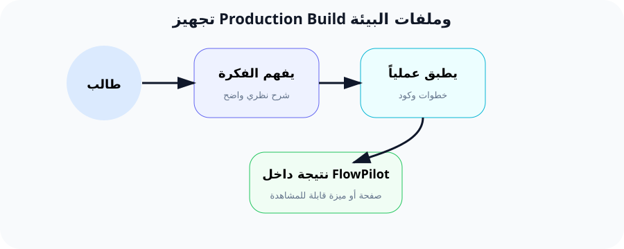

تجهيز Production Build وملفات البيئة
"الفرق بين موقع يعمل على جهازك وموقع يعمل في العالم الحقيقي هو الفرق بين سيارة لعبة وسيارة حقيقية."
ما هي بيئة الإنتاج (Production Environment)؟
بيئة الإنتاج هي النسخة النهائية من موقعك التي تعمل على سيرفر حقيقي ويستخدمها الزوار والعملاء. تختلف تماماً عن بيئة التطوير (Development) التي كنا نعمل عليها طوال الدورة.
في بيئة التطوير، نستخدم npm run dev الذي يحمل آلاف الملفات الصغيرة ليسهل علينا التعديل. أما في الإنتاج، فنحتاج npm run build لدمج وضغط كل الملفات في ملفات قليلة جداً وسريعة التحميل.
مصطلحات مهمة للمبتدئين:
- Build: عملية تحويل الكود المصدري (Source Code) إلى ملفات جاهزة للنشر.
- Environment: البيئة أو الإعدادات التي يعمل فيها التطبيق (تطوير / إنتاج / اختبار).
- Optimize: تحسين الأداء عن طريق تخزين المعلومات مؤقتاً (Cache).
- Vite: أداة بناء حديثة تقوم بضغط ملفات JavaScript و CSS بكفاءة عالية.
ملف .env بالتفصيل
ملف .env هو ملف خاص يخزن إعدادات المشروع السرية والحساسة. تخيل أن موقعك عبارة عن منزل، وملف .env هو صندوق المفاتيح السري الذي لا يراه أحد.
المتغيرات الرئيسية في ملف .env:
APP_ENV=production // يخبر Laravel أن هذا هو وضع الإنتاج
APP_DEBUG=false // يمنع ظهور الأخطاء التفصيلية للمستخدمين
APP_URL=https://example.com // رابط موقعك الرسمي
DB_HOST=127.0.0.1 // مكان استضافة قاعدة البيانات
DB_DATABASE=flowpilot_db // اسم قاعدة البيانات
DB_USERNAME=root // اسم مستخدم قاعدة البيانات
DB_PASSWORD=secret // كلمة سر قاعدة البيانات (سرية جداً!)
تحذير أمني مهم:
إذا تركت APP_DEBUG=true في الإنتاج، فإن أي خطأ في موقعك سيعرض معلومات حساسة للمستخدمين مثل كلمات سر قاعدة البيانات ومسارات الملفات. هذا خطر أمني كبير يجب تجنبه!
شرح كل متغير:
APP_ENV=production
هذا المتغير يحدد البيئة التي يعمل فيها التطبيق. عندما يساوي production، يعرف Laravel أنه يجب أن يتصرف كموقع حقيقي (لا يظهر أخطاء، يستخدم الكاش، إلخ).
APP_DEBUG=false
هذا المتغير يتحكم في ظهور الأخطاء. في التطوير نضعه true لنرى التفاصيل. في الإنتاج نضعه false لحماية الموقع.
APP_URL
هذا هو الرابط الرسمي لموقعك. Laravel يستخدمه لتوليد روابط صحيحة في البريد الإلكتروني والإشعارات.
تشبيه واقعي (مطعم جاهز)
تخيل أنك طباخ محترف.
في التطوير: أنت في مطبخك الخاص، ترتكب أخطاء، تسكب الملح، وتتذوق الطعام وتصححه. لا أحد يراك.
في الإنتاج: أنت تفتتح مطعماً للجمهور. يجب أن يكون الطعام جاهزاً ومثالياً. لا يمكن للزبائن رؤية الأطباق المتسخة أو الوصفات السرية. كل ما يظهر هو الوجبة النهائية الجميلة.
npm run build هو كأنك تحضر الوجبة وتزينها قبل تقديمها للزبون. APP_DEBUG=false هو كأنك تخفي مطبخك خلف باب مغلق.
الربط مع مشروع FlowPilot
في FlowPilot، كل الميزات التي بنيناها - تسجيل الدخول، إدارة الملفات، لوحة التحكم - يجب أن تعمل بسلاسة فائقة في الإنتاج.
ما سنفعله الآن بالضبط:
- نبني ملفات React و Tailwind جاهزة للإنتاج بأمر
npm run build. - نعدل ملف
.envليكون مناسباً للإنتاج. - نحسن أداء Laravel بأوامر الـ Optimization.
- نتأكد أن Vite يعمل بشكل صحيح للإنتاج.
6 خطوات عملية لتحضير الإنتاج
الخطوة 1: بناء ملفات الواجهة الأمامية (Frontend Build)
npm run build
شرح الأمر:
Vite يقوم بقراءة جميع ملفات React و Tailwind من مجلد resources/، ثم يدمجها ويضغطها ويخرجها في مجلد public/build/. الناتج يكون ملفات صغيرة جداً (bundle) المتصفح يحملها بسرعة.
الخطوة 2: تحديث ملف .env
افتح ملف .env في جذر المشروع وغير القيم التالية:
APP_ENV=production
APP_DEBUG=false
APP_URL=https://yourdomain.com
شرح التغييرات:
- APP_ENV: يغير سلوك Laravel ليتصرف كموقع إنتاج.
- APP_DEBUG: يمنع ظهور أخطاء PHP التفصيلية.
- APP_URL: يضمن أن كل الروابط في الموقع تستخدم النطاق الصحيح.
الخطوة 3: تحسين Laravel (Optimization)
php artisan optimize
هذا الأمر يقوم بتخزين مؤقت (Cache) لجميع الإعدادات والمسارات لزيادة السرعة.
الخطوة 4: تخزين الإعدادات (Config Cache)
php artisan config:cache
ماذا يحدث بالضبط؟
Laravel يدمج جميع ملفات config/*.php في ملف واحد كبير (bootstrap/cache/config.php). هذا يمنع Laravel من قراءة 50 ملف config كل مرة، وبدلاً من ذلك يقرأ ملفاً واحداً فقط. السرعة تزيد بشكل هائل!
الخطوة 5: تخزين المسارات (Route Cache)
php artisan route:cache
مثل الخطوة السابقة، لكن للمسارات (routes/web.php و routes/api.php). يدمجها في ملف واحد لتسريع معالجة الطلبات.
الخطوة 6: التحقق من إعدادات Vite
تأكد من أن ملف vite.config.js جاهز للإنتاج. افتح الملف وتأكد من وجود هذا الإعداد:
import { defineConfig } from 'vite';
import laravel from 'laravel-vite-plugin';
import react from '@vitejs/plugin-react';
export default defineConfig({
plugins: [
laravel({
input: 'resources/js/app.jsx',
ssr: 'resources/js/ssr.jsx',
}),
react(),
],
});
شرح الكود:
- laravel(): يخبر Vite بمكان ملفات JavaScript الأساسية.
- react(): يضيف دعم React لتحويل JSX إلى JavaScript عادي.
- npm run build يستخدم هذا الإعداد لتوليد الملفات النهائية.
شرح الكود سطراً سطراً
أمر npm run build
npm // Node Package Manager - أداة إدارة الحزم
run // تشغيل أمر معين موجود في package.json
build // اسم الأمر الذي ينفذ: vite build
ماذا يحدث داخل Vite عند build؟
1. يقرأ ملف resources/js/app.jsx
2. يتتبع جميع الاستيرادات (imports)
3. يدمج كل الملفات في bundle واحد
4. يضغط الأسماء (minify) ويصغر الحجم
5. يكتب الناتج في public/build/assets/
أمر php artisan optimize
php // لغة PHP - مشغل Laravel
artisan // أداة الأوامر المضمنة في Laravel
optimize // أمر يحسن الأداء عبر تخزين مؤقت للـ config و routes و views
ماذا يحدث بالتفصيل؟
1. config:cache - يخزن كل config/bootstrap/cache/config.php
2. route:cache - يخزن كل المسارات في ملف واحد
3. view:cache - يخزن قوالب Blade في صيغة PHP سريعة
النتيجة: موقع أسرع بمقدار 5-10 مرات!
النتيجة المتوقعة
ظهور مجلد public/build
ستظهر مجلدات assets/ داخل public/build/ تحتوي على ملفات .js و .css بأسماء عشوائية (مثل: index-H37s.js). هذا طبيعي - Vite يضيف بصمة لتحديث الكاش تلقائياً.
اختفاء أخطاء Debug
عند إيقاف التطوير (npm run dev) وتشغيل الموقع من Laravel مباشرة، لن تظهر شريط الأخطاء الأصفر Debugbar (إن كان مثبتاً).
سرعة تحميل فائقة
بدلاً من تحميل 100 ملف صغير، المتصفح سيحمل 2-3 ملفات فقط. الصفحة ستظهر أسرع بكثير.
صفحة 404 بسيطة
بدلاً من صفحة خطأ مفصلة مع trace، ستظهر صفحة 404 مخصصة وجميلة.
5 أخطاء شائعة وكيفية حلها
الخطأ 1: npm run build يفشل مع خطأ في Vite
السبب: غالباً حذف مجلد node_modules أو عدم تثبيت الحزم.
الحل: شغل npm install أولاً ثم أعد npm run build.
الخطأ 2: الموقع يعرض شاشة بيضاء (White Screen)
السبب: ملفات الـ build قديمة أو تالفة.
الحل: احذف مجلد public/build واعد تشغيل npm run build.
الخطأ 3: ظهور أخطاء PHP بعد رفع الموقع
السبب: نسيت تغيير APP_DEBUG إلى false.
الحل: تأكد من ملف .env أن APP_DEBUG=false، ثم شغل php artisan config:cache.
الخطأ 4: الروابط لا تعمل (404 على كل الصفحات)
السبب: لم يتم تشغيل route:cache أو أن ملف الـ routes غير صحيح.
الحل: شغل php artisan route:clear ثم php artisan route:cache.
الخطأ 5: النمط (CSS) لا يظهر بشكل صحيح
السبب: Tailwind لم يبنَ بشكل صحيح أو أن ملفات CSS لم تُضمن.
الحل: تأكد من وجود @vite('resources/css/app.css') في ملف layout الرئيسي.
مخططات توضيحية

مقارنة بيئة التطوير vs الإنتاج

رحلة الكود من التطوير إلى الإنتاج
ملخص الدرس
🔹 بيئة الإنتاج هي النسخة النهائية للموقع التي يراها المستخدمون.
🔹 ملف .env يتحكم في إعدادات البيئة: APP_ENV و APP_DEBUG و APP_URL.
🔹 APP_DEBUG=false يمنع تسريب المعلومات الحساسة في حال حدوث خطأ.
🔹 npm run build يضغط ملفات الواجهة الأمامية للإنتاج.
🔹 php artisan optimize يحسن أداء Laravel عبر التخزين المؤقت.
🔹 config:cache و route:cache يدمجان الإعدادات والمسارات في ملف واحد.
🔹 Vite يتعامل تلقائياً مع ضغط الملفات وإضافة بصمات للتحديث.
"الإعداد الجيد للإنتاج هو الفرق بين مطور هاوٍ ومطور محترف."